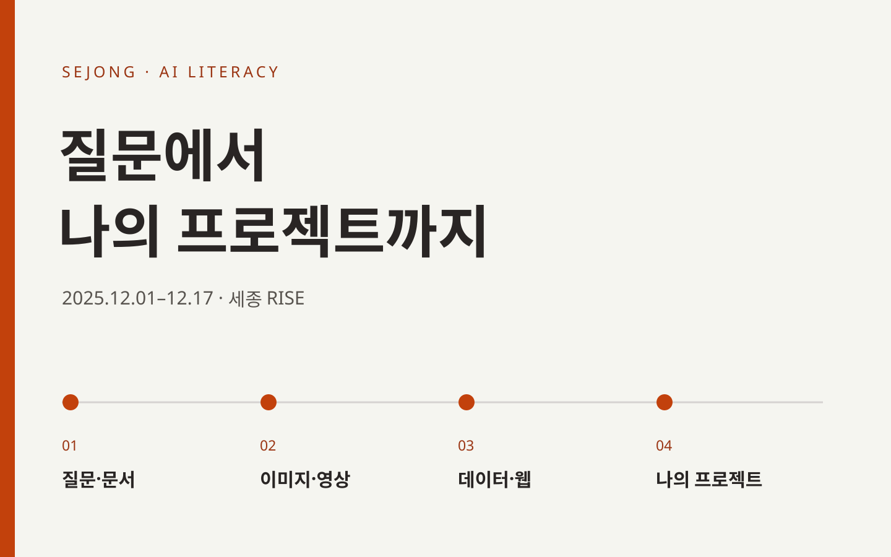

EDUCATION ARCHIVE / SEJONG / 2025
질문에서 시작해,
나의 프로젝트까지
질문과 콘텐츠 제작에서 데이터 분석·웹 실습·개인 프로젝트까지. 세종 AI 리터러시 교육의 13일을 소개합니다.
여행 일정을 묻던 질문이 보고서와 이미지가 되고, 데이터와 웹 화면을 거쳐 각자의 프로젝트로 이어졌습니다. 생활과 업무에서 써 볼 수 있는 작은 결과물을 만드는 것이 이 과정의 출발점이었습니다.

2025 · 12.01
AI에게 질문하는 방법
질문 설계 → 생성 → 비교 → 수정
여행 일정과 메시지를 만들며 역할, 조건, 예시를 담은 질문을 연습했습니다. ChatGPT와 Gemini의 답변을 비교하고 목적에 맞게 요청을 고쳤습니다.
2025 · 12.02
이미지에서 카드뉴스와 블로그로
GPT · Sora · Gemini · Grok
사진 변경, 4컷 만화, 포스터와 카드뉴스를 만들었습니다. 글의 초안과 이미지 생성 요청을 연결하고 블로그에 공유하며 메시지와 시각 표현을 함께 다뤘습니다.
2025 · 12.03
장면을 연결해 숏폼 만들기
기획 → 스크립트 → 편집 → 공유
짧은 영상과 인트로를 생성한 뒤 Vrew에서 자막, 사진, 배경음악을 붙였습니다. 관심 있는 주제를 시청자가 이해할 수 있는 순서로 편집하고 유튜브에 공유했습니다.
2025 · 12.04–12.05
문서·엑셀·발표 업무에 적용하기
보고서 · 스프레드시트 · 슬라이드
Zapier를 활용한 이메일 응답 흐름, 자유 주제 보고서, AI에 요청한 엑셀 함수, Felo·Gamma와 GPT를 활용한 발표자료 제작을 실습했습니다. 초안을 만들고 업무 목적에 맞게 정리하는 과정입니다.
2025 · 12.08–12.09
콘텐츠 제작에서 개발 환경까지
Canva · Suno · NotebookLM · Python
교육 포스터와 노래를 만들고, 상품 리뷰 자료에서 정보를 추출해 블로그로 정리했습니다. NotebookLM으로 자료를 다루는 경험에 VS Code·Python 설치와 간단한 코드 실행을 더했습니다.
2025 · 12.10–12.11
데이터를 읽고 웹 화면으로 표현하기
pandas · GitHub Copilot · FastAPI · SQLite
Copilot 지침과 에이전트 기능을 활용해 엑셀을 CSV로 변환하고, 상관계수표·히트맵·선형회귀 예제를 만들었습니다. 이어 FastAPI 웹페이지에 데이터베이스와 채팅 기능을 붙이며 코드가 실행되는 흐름을 살폈습니다.
2025 · 12.12–12.17
자신의 주제로 프로젝트 완성하기
주제 선정 → 제작 → 피드백 → 발표
관심 있는 생활·업무 문제를 정하고 배경 조사, 계획서, 산출물과 발표자료를 준비했습니다. 도서관 영상, 제품 기획, 동화책, 농장 기록, 상담과 홍보 등 서로 다른 주제로 배운 도구를 연결했습니다.
CODE & PRACTICE
실습이 코드로 남은 기록
수업 저장소 AI_literacy에는 CSV 변환과 분석, 심장·와인 데이터 예제, 히트맵과 회귀 결과, FastAPI 웹 화면과 채팅 앱, 프로젝트 계획서가 남아 있습니다. 12월 9일 첫 커밋에서 16일 채팅 앱까지 이어지는 기록은 수업 후반의 개발 실습 흐름을 보여 줍니다.
FROM PRACTICE TO PROJECT
같은 도구, 서로 다른 쓰임
누군가는 작은도서관을 소개했고, 누군가는 동화책을 만들었습니다. 농장 기록과 매장 상담처럼 자신의 일을 과제로 가져온 교육생도 있었습니다. 결과물을 만드는 과정에서 무엇을 AI에 맡기고 무엇을 직접 판단해야 하는지 구체적으로 경험했습니다.